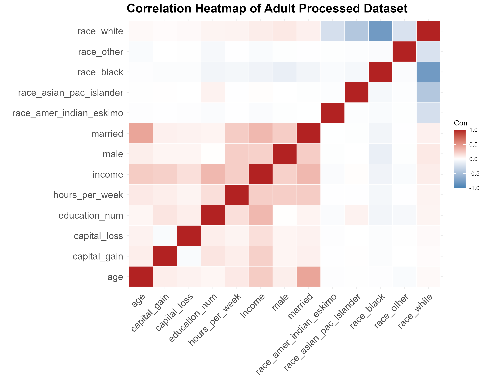
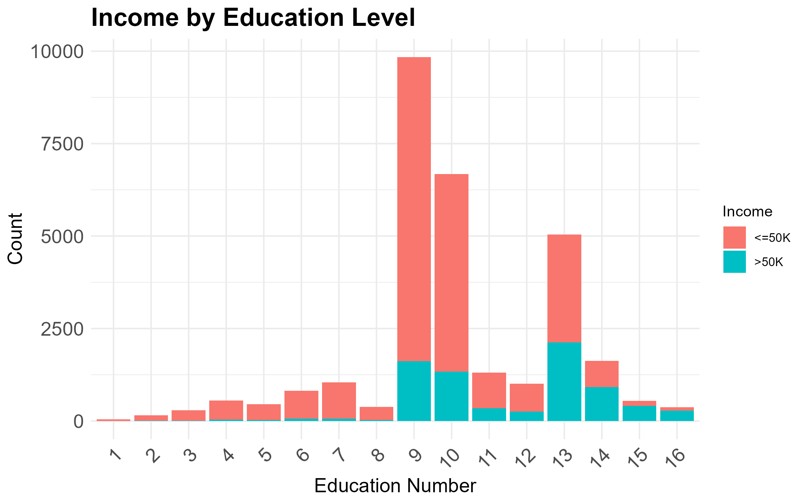
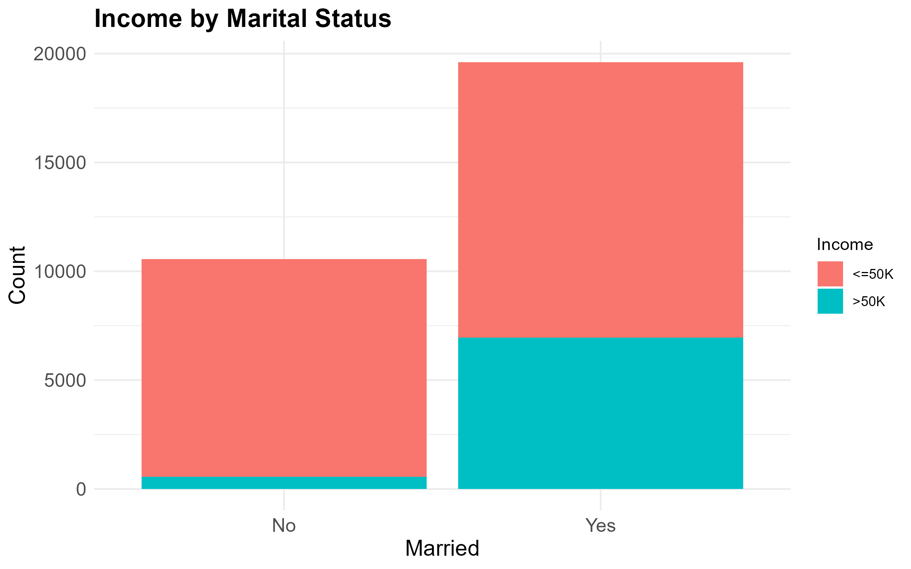
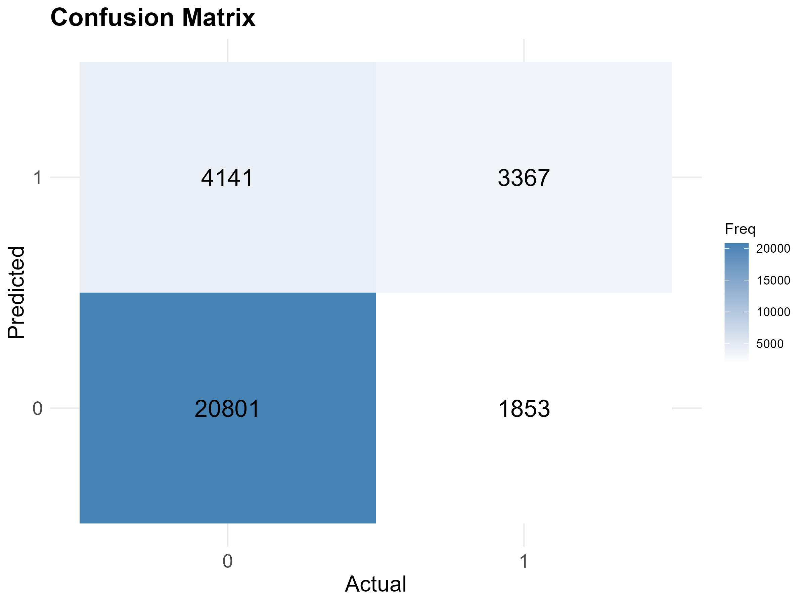
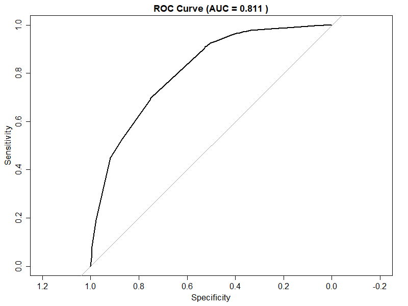

| Income Group | Count | Proportion (%) |
|---|---|---|
| <=50K | 22654 | 75.11 |
| >50K | 7508 | 24.89 |
Predicting Income >$50K Using 1994 UCI Adult Census
1 Summary
We applied a logistic regression model on the 1994 UCI Adult Census dataset to predict whether an individual earns ≤$50K or >$50K a year. The model achieved an accuracy of 80.13% and precision of 64.5%. One of the patterns we found from our exploratory data analysis was that education and income appear to be positively correlated — as the education level of an individual increases, their income tends to increase. Another important correlation was between marital status and income, where married individuals were more likely to earn >$50K compared to non-married individuals. The findings from this analysis can be used to influence education and other social policies. Due to the strong performance of this model it can also serve as a template for similar work in economic research. These patterns are reflected directly in the model — education_num and married were selected as predictors based on their strong correlations with income observed in the EDA,and the model’s AUC of 0.811 confirms that these two features carry meaningful predictive signal.
2 Introduction
Income is influenced by a mix of personal and labour-market factors such as education, occupation, and hours worked. Predicting whether someone earns above a given threshold is a common classification problem in data science and also raises practical questions about how demographic and job characteristics relate to earnings outcomes.
This project uses the UCI Adult (Census Income) dataset (Becker and Kohavi 1996) to build and evaluate a model that predicts whether an individual’s annual income exceeds $50K using demographic and work-related features (e.g., age, education, occupation, hours worked per week). The dataset contains 48,842 observations and 14 input features (6 quantitative and 8 categorical), with the target variable indicating whether income exceeds $50K. UCI also notes that records were selected using the following conditions:
- Age > 16
- Adjusted gross income (AGI) > 100
- Final weight (AFNLWGT) > 1
- Hours worked per week (HRSWK) > 0
3 Methods & Results
3.1 Data Wrangling Summary
Since the original data does not include column names, descriptive variable names were manually assigned based on the dataset documentation. The data was then cleaned by removing observations containing missing or undefined values (represented by "?") in key categorical variables such as workclass, occupation, and native country, as well as filtering out individuals who had never worked. Several categorical variables were transformed into binary indicator variables to make the dataset more suitable for quantitative analysis and modelling, including indicators for marital status, sex, and race categories. The target variable, income, was converted into a binary numeric outcome where 1 represents individuals earning more than $50K annually and 0 otherwise. Finally, redundant or highly categorical variables that were no longer needed after encoding were removed, resulting in a cleaned, analysis-ready data frame composed primarily of numeric predictors and selected categorical information.
3.2 Analysis Summary
We conducted exploratory data analysis including a visualization of the class distribution between >$50K and ≤$50K income groups (Table 1), as well as a correlation matrix (Figure 1) to help inform variable selection. Once we isolated our variables of interest, we fit a simple logistic regression to conduct our classification experiment.
Table 1 shows the class distribution in the processed dataset. The dataset is notably imbalanced: 75.1% of individuals earn ≤$50K (22654 records) compared to only 24.9% earning >$50K (7508 records).
Figure 1 shows the correlation among all numeric variables in the processed dataset. The education_num and married variables hold the strongest associations with the response variable income, which informed our variable selection for the classification task. We also noted that these two predictors are not highly correlated with each other, which is a positive sign for the model.

Figure 2 shows the distribution of income across education levels and marital status. Higher education levels correspond to a greater proportion of individuals in the >$50K category, suggesting that education level provides useful predictive signal. Similarly, married individuals have a higher proportion of >$50K earners compared to those who are not married. It is important to note that these observations are descriptive and do not imply causal relationships — they highlight patterns that the predictive model can leverage when classifying individuals into income groups.


We fit a logistic regression model using education_num and married as predictors of income. The model achieved an overall accuracy of 80.13% and precision of 64.5%.
Figure 4 presents the confusion matrix for the logistic regression model. The model correctly classified 20,801 individuals in the ≤$50K category and 3,367 in the >$50K category. However, it misclassified 4,141 high-income individuals as low-income (false negatives) and 1,853 low-income individuals as high-income (false positives). These results indicate that the model performs better at predicting the ≤$50K class, with lower sensitivity in identifying high-income earners.

Figure 5 shows the ROC curve for the logistic regression model. An AUC of 0.811 indicates that the model is able to correctly rank higher-income individuals above lower-income individuals in most cases, demonstrating good discriminative performance across different classification thresholds.

4 Discussion
We applied a logistic regression model to predict whether an individual earns ≤$50K or >$50K annually. The model achieved an accuracy of 80.13%, indicating strong predictive performance. Additionally, the AUC is 0.811 (see Figure 5), suggesting that the model is effective at distinguishing between lower- and higher-income individuals.
From the exploratory visualizations (see Figure 2 and Figure 3), certain variables appear to contribute meaningfully to the model’s predictive performance:
- Education level: Higher education levels are associated with a greater proportion of individuals predicted as earning >$50K, suggesting that this variable is useful in distinguishing between income groups (Strober 1990).
- Marital status: Married individuals are more frequently predicted as earning >$50K, indicating that this feature provides predictive signal for the model (Cutright 1970).
As shown in Figure 4, while overall performance is strong, the model performs better at predicting individuals in the ≤$50K class than those in the >$50K class. This imbalance is likely influenced by the class distribution in the dataset (see Table 1), where lower-income individuals are more prevalent, causing the model to be better calibrated toward the majority class.
Potential implications:
- Predictive utility: With an AUC of 0.811, the model demonstrates reasonable effectiveness for predicting income categories and could serve as a baseline for similar classification tasks (Rosenblum, Kenworthy, and Nygård 2025).
- Feature relevance: Variables such as education level and marital status appear to provide useful predictive information and may be important inputs for future models.
Future directions:
- Would more complex models (e.g., random forests or gradient boosting) improve prediction, particularly for high-income individuals?
- How can class imbalance be addressed to improve sensitivity for the >$50K class?
- Does predictive performance vary across demographic subgroups such as gender, race, or age (Tan et al. 2026)?
5 References
Becker, Barry, and Ronny Kohavi. 1996. “Adult.” UCI Machine Learning Repository. https://doi.org/10.24432/C5XW20.
Cutright, Phillips. 1970. “Income and Family Events: Getting Married.” Journal of Marriage and the Family 32 (4): 628–37. https://doi.org/10.2307/350256.
Rosenblum, Jordan, Lane Kenworthy, and Mikael Nygård. 2025. “Power and Inequality: Determinants of Income Inequality in Rich Capitalist Democracies, 1960 to 2019.” Socio-Economic Review 23 (2): 979–1012. https://doi.org/10.1093/ser/mwae071.
Strober, Myra H. 1990. “Human Capital Theory: Implications for HR Managers.” Industrial Relations 29 (2): 214–39.
Tan, Ziyang et al. 2026. “Gender Income Inequality Within and Outside the State System in China, 2003–2021: An Age–Period–Cohort Analysis.” Sustainability 18 (1): 130. https://doi.org/10.3390/su18010130.